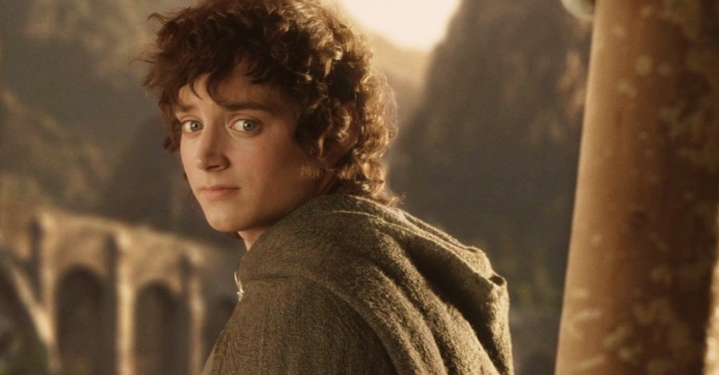

Featured Essay
Fantasy & Myth
Notes from the Red Book - part 1
There Is No Going Back
Frodo saves the world and cannot live in it anymore.
Tolkien understood something about trauma that most stories don't dare to say out loud.

About
"The same stories, from two very different perspectives."
Timeless Stories is written by two friends who can't agree on whether God exists. One of us looks for answers in faith. The other looks in fiction, mythology, and the kind of stories that refuse to stay stories.
It turns out they're asking the same questions. These essays are where we look for answers. Together.